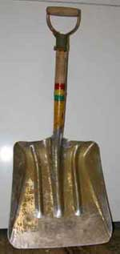

Alaskan Alpine Club
Alaska Climbing Concepts 1
Remember, if you want the standard stuff, go to a standard
source. No other mountain climbing club leaders will illuminate
these concepts, much to our robust laughter the entire time.
The concept of it all...
It is not about the mountains. It is about your mind. If you attempt to suggest that is in error, listen to your mind's reasoning.
In Alaska, you can climb as a free human, if you learn how. Freedom unshackles access to knowledge. For the human design, knowledge is everything.
If you do not learn the source of your contradictions, nothing can resolve those contradictions for you.
Mountain climbing is one of the pure expressions of individual freedom, exercised in the mountains where your mind can learn the priceless value of flawless human freedom for thinking, asking questions and making decisions. It is inordinately rare knowledge, of inordinately useful value. Would you not agree?
The mountains do not care what humans do, despite the illusions of environmentalists frolicking in flowery fields in the sky. Nor do the environmentalists really care. They are just on a petty political power trip like all the other followers of isms and ists throughout history. Perhaps with the exception of miners who rarely go there to get the metals that mountain climbers use for their equipment, and who do not bother mountain climbing, the only people who go into or onto the mountains are mountain climbers, by definition. It is the perfect place to let the climbers go do whatever they want. The only problems climbers create in the mountains affect only climbers, and no one else in society. Nor do they do anything that society does not already do to a vastly greater extent.
The mountains are more durable than the stuff that sluffs off into the valleys, and the climbers will never even approach the effects of weather for the process to alter the mountains.
There are enough mountains to share them with people other than mountain climbers.
In the mountains, the climbers can solve their own problems or endure them. Society owes them nothing and is not obligated by them. If the climbers start leaving too much trash, fellow climbers rag them, to the embarrassment of anyone else thinking of leaving trash. The climbers organize clean-up trips, and the problem is solved to the optimally achievable extent. If you threaten them with jail, they will defy your threats with far more ease than climbing the mountains. If climbers have accidents, fellow climbers will rescue them and create progressively better rescue systems, because rescuing climbers is as fun as climbing mountains, and more ego gratifying. The climbers are out of the way in the mountains, and their stories offer good entertainment for others.
So why has government invaded the mountains with bureaucrats and armed thugs, at great tax cost to society, to make mountain climbers kowtow to the usual government expressions of unmitigated stupidity, destroying freedom for no social gain? Is there anything that the pitiably greedy government folks do not seize under threat of guns and prison, to extend their ego-gratification of raw power over everything? The problem is not the climbers. The problem is the government sorts and their pocket organization leaders. Solve the actual problem. You perpetuate problems by attempting to solve what is not a problem. The police, be they city cops or mountain cops, like the military, are just a bunch of immature little brats with guns, who sincerely believe their purpose in life is to force other humans to kowtow to force. Pity them. They use the existence of the few real criminals as an excuse to arrest and harass far more harmless people. They are as embarrassing as I was when I was a military dolt, and then they became too afraid of the world to step out of their heavily armed cocoon.
Are there any education deficiencies in this nation, unrepaired streets, crime problems, yet uncurable diseases, water problems, neglected old people and such social phenomena in the cities, while your obviously dishonest DemocanRepublicrat politicians are squandering your tax money on mental midget mountaineering bureaucrats frolicking out in the mountains where there are no genuine social problems? And tomorrow the Washington DC leaders will waste more of your tax money the same way, to increase those problems to make fools more dependent upon government dolts. Are you among them, or can you state these truths in public to distinguish yourself from government chaps and their pocket minions?
Did your mind want to climb the mountains, or learn the knowledge they offer?
Imagine the fear and anger of all those institution leaders reading these words, all those government drones, organization officials and their ilk, incensed that anyone would dare to suggest your possible freedom from their edicts and demands. Laugh yourself to tears at those poor sad National Park Service swine and the mountaineering organization leaders in their pocket, who are enraged at the thought of you being out in the mountains without your first kowtowing to every government idiot-drill. Their minds have never recognized freedom, cannot comprehend the concept, and fear the suggestion of freedom more than death itself. They will die of old age, having never recognized the concept of freedom, more ignorant than children. They see humans as their enemy, oblivious to their being human, much to the amusement of observant humans.
Crevasses...
Alaska has a lot of glaciers, which are commonly used for access to climbing. A climber is often stumbling along the things just to get to where you start climbing, as well as the climbing itself. And the glaciers have a lot of crevasses in them.
Very few people fall into crevasses, but it is the zenith of embarrassment to die in a crevasse, because that's what climbing ropes are for, and climbers are supposed to know about those things. If you are climbing in Alaska, you are on glaciers, unless you are doing that wusey other stuff like hanging off an ice tool stuck in a vertical frozen waterfall, or dangling from your finger tips on some dirty rock, while your other hand is trying to find that film canister in your chalk bag.
Take the time to physically ascend and pulley-system out of a real crevasse or anything worse in cold weather, after dangling on a rope, snow falling down your neck, with every other adverse detriment you can devise, to learn crevasse rescue, to perfection. Practice in an old crevasse that you can walk out of when you learn a limit in your current knowledge or ability. Then go wherever you wish because you will have impressed yourself with how seriously hard it is to get back up over the lip of a crevasse, and thus have your scat in precise order before you play footsey with crevasses.
If it is bare glacier ice, enjoy walking on it. If it is snow over glacier ice, rope up, and have your ascenders already attached and ready to use. Gibbs ascenders get back through crevasse edges better than jumars, like better enough to get them for any glacier travel. Don't forget about moulins, vertical ice cave entrances, which are less extensive than crevasses, but will kill you if you give them the chance.
Cold...
It is still cold in Alaska, but keep burning that fossil fuel for global warming. We get the current advantages.
The cold is no problem. Get a coat. Locals climb in the winter, on account of there being no tourists in the mountains then, and there being no local jobs. But it does get a bit nippy at times in the winter. Get warm stuff. The cold in other places where the cold story is made at night, and the warm sunny day story is not told, is not the cold of all day long with the sun low on the horizon on the other side of the mountain. If you are not climbing in the 24 hours of light in the summer, your warm gear should be a bit more durable than you use elsewhere, then just pay attention to exposure of skin to reduce the total warmth loss.
The wind is what really makes the cold, cold. So protect your skin surfaces from the wind. But don't get caught telling people how cold it was by using the number calculated from the wind chill factor. Thirty below zero in no wind is nice. Thirty below zero in a fifty knot wind is miserable. But it is still only thirty below zero, then add the wind story. Exposed flesh freezes in seconds you know.
Oh, after you get a coat, it's the water. Drink water. It is dry in the Alaska interior winter. You lose a lot of water while winter climbing. Dehydration increases the effects of the cold. Drink water. Beer is mostly water, but it freezes too soon. I recommend whiskey, the good kind you can burn in your stove if you need to melt snow for water.
Where to climb...
The really good places to climb in Alaska, are all secret. If you are being told about any of them, don't believe the story. If you are a tourist, go to The Park. Stand in line. Do as you are told. The National Parks are the perfect place for people who go there. If you don't want to be a tourist, rag the government dolts, to their face, and go where the parks are not.
All the information you need for where to climb in Alaska, is on a topographical map.
The Mountain Ranges and places...
The mountains of the Coast Range in southeast Alaska are an exercise in weather survival. And you can tell some climbing stories if you survive the miserable wet cold stormy weather if you get close to or see any of the peaks. The peaks are beautiful. Buy the postcard.
The mountains of the Wrangell St. Elias and Chugach Ranges of south central Alaska are an exercise in luck. They get enough good weather that if you are lucky in that regard, you can do some great climbing. A lot wet weather from the gulf of Alaska. A lot of avalanches in those parts. Be careful.
The volcanoes of the Aleutian Islands are a rumor. There was an old story from 1869 about a clear day out there, and some whaling boat sailors saw mountains on the islands, but it socked in with clouds that afternoon and it hasn't been clear since. That's okay. It cost too much to fly out there, and climbers don't have any money.
Alaska Range mountains are where mountain climbers climb mountains, and sometimes come back with some bad weather stories.
Brooks Range mountains are where rich people can afford to fly, and do some great hiking among beautiful remote hills. There are a couple areas of nice rock wall climbing. You will come back with Brooks Range stories, because so few people can afford to fly there.
Alaska rock is shit rock. Over the last few million years the cold winters and warm summers have broken up even the good stuff, and the environmentalists refuse to stop Nature's malicious destruction of the environment. A common comment about our otherwise nice looking walls is that they rain rocks. Here and there are a few places of reasonable rock. There are even a few spectacular walls of virgin white solid granite, but they are part of higher mountains that climbers climb on the glaciers, and tell stories about going back some day for the rock.
Frozen waterfalls are all over the place, along about winter time. There are spectacular frozen waterfalls back in remote areas that will not be climbed for decades, if global warming does not melt them first. Of course Valdez ice is the King of Ice. If you discover Valdez ice climbing, don't tell anyone. And why do I tell you about the spectacular frozen waterfalls at Valdez? Because you will have way too much fun, but you will earn it.
The best time to climb in any of the places in Alaska, is the moment you can escape town.
Boarding...
Snow boarding is at Valdez, on account of it being spectacular and close to an airport right there below the slopes. Helicopters are available. Boarding is available all over the Alaska, but convenient access is not.
Bears...
Yeah, there are bears in Alaska, black ones and brown ones. The white ones are not in the mountains, and its a good thing. People ask about them. Don't worry, there is only about one person per year killed or seriously maimed by a bear in Alaska, often visitors because they are tender. The other less seriously damaged victims each year are better able to tell their own stories that you want to only hear. Bears go high on the glaciers, and some climbers have not returned on the favorable side of the resulting stories. In bear country, smart people carry big guns, the only real bear protection. If you are climbing, you won't carry the extra weight of a gun, but climbers are not smart anyway, so sharpen your ice axe and enjoy the climb. More bear info is at www.AlaskaStories.com at the links page.
Climbing Equipment...
If it works for you, use it. When it fails, figure out exactly why and modify it or get better equipment. If you did not plan for an alternative in Alaska conditions, other people will laugh at your stupidity that they previously survived because they planned for an alternative or were just plain lucky. Do not plan on being lucky.
Equipment routinely fails. Rely on knowledge, not equipment. Know everything about your equipment, and everything about everything it is made of. Be able to make your own equipment. Take it apart and put it together a few times before you leave on the climb. Carry a needle and thread, and other repair stuff.
In good conditions the ordinary equipment will usually work. The reason there are fewer people per acre the farther north you go, is because the good conditions are less. Alaska Range winter mountain climbing and caving are the local standard for comment on equipment quality.
If Apocalypse Design makes it, it works for the local standard in Alaska. The name answers your questions. The owner is an Alaskan adventurer and climber making sewn outdoor equipment in Fairbanks, used around the world, including both poles, by the most extreme adventurers. For climbing tents, Stephenson Warmlite is a name to know.
Everybody knows the game of endorsing equipment that was given to the climber in exchange for the endorsement. And it always works on the summit of Sagarmatha (Everest to those who adulate bureaucrats). So laugh when you see the results of the game. Alaska conditions are generally more demanding on equipment than the warmer Himalaya and other mountain ranges. Make your decisions on your understanding of your equipment. Will it endure a lot of rough use in consistently cold weather, then not fail when everything turns to scat? You can take delicate equipment with other advantages, if you treat it within its limits, and know how to repair it when everything turns to the aforementioned. Know your equipment.
Mountaineering guides...
Would you hire a guide who was available because armed thugs threatened-away more intelligent and capable people who wanted to compete against him on the open market? Well?
We laughed out loud at a certain Alaskan mountaineering guide who supported the National Park Service against the rights of the mountain climbers back in 1980. He said he would cooperate with the National Park Service so he could get one of the concession guiding permits. Poor chap. Never think you can win the game of dishonesty. The winner is a fool. There was another Alaskan mountaineering guide who more slaveringly supported the Park Service against the mountain climbers, and because the Park Service sorts had to have one token Alaskan guide in their pocket, he got one of the permits otherwise granted to lower 48 political supporters of the Park Service.
The National Park Service concession permit system matches the definition of criminal racketeering. The Park Service selects unintelligent, dishonest people who will serve inside the Park Service pocket without asking questions of glaring contradictions. The proof is manifest with even the most basic questions that the Park Service and concession permit holders flee.
The permit system is saturated with felony violations of law by Park Service personnel, among other contradictions. That the government chaps are criminals is recognized by an increasing majority of Americans. The examples are too many and too often to hide. Some citizens are angry at the government lawlessness. Wiser people are amused. A criminal, either private or government, is merely a person too stupid to function rationally in a civilized society. A curious person asks the questions to understand the reasoning-defect in the criminal/government mind.
A concession permit system limits the number of profit-raking permit holders, but not his employees. It creates monopolies and illusional competition. Faced with those obvious facts when debating the related bill, Congress therefore wrote the law expressly allowing concession permits in National Parks only when facilities development is required inside the park (not involved with mountaineering guides), and legally identified crowding creates an identified problem. The reason the Park Service refuses to identify any legally defined crowding or resulting problems with any mountain climbing operations, is because it is not possible to do so even with the best corruption the Park Service can create. The Park Service concession permit law (Public Law 89-249) was designed for hotels. You just can't get enough guided climbers to block the traffic on a mountain. The routes don't have curbs. There is no authority in law for the concession mountaineering guide permit system in National Parks, but there has never been a law that the Park Service chaps could not flagrantly violate with impunity, including murder. You could ask Donald P. Scott of Ventura California, and several others, but they are dead. The Park Service mountaineering guide concession permits are flagrantly unlawful, and a highly lucrative criminal racketeering operation, much to the amusement of observers.
The profits of many actual climbing guides on the mountain are funneled to a permit holding profit-raker sitting in an office. Any guide not working under the permit holder is arrested by armed thugs called Park rangers. In Chicago the system is called criminal racketeering. In some third world countries it is called bribery or bocsheesh. In the United States it is called a government permit system. In previous times it was called tribute to the king's sheriffs. It is universal to inherently corrupted government, and ongoing. The object is not to stop it, but to learn from it and laugh at its victims who are just too lazy to learn its Achilles heel. There will always be a cozy home for criminals in government employment. Learn from it.
Would you want your children to be so unthinking that they could not figure out what questions to ask to reveal how embarrassing and malicious Park Service thugs are? Would you want to be as incompetent as a permit-holding mountaineering guide who couldn't make a living on the open market of fair competition, who is loathed and ridiculed by real mountain climbers and intelligent people? Would you want to be so naive that you would hire a dishonest, incompetent person for a mountaineering guide? The permit-guides are the choice of those who deserve them. The mountaineering guide company that has killed more clients than any other such company in the US, is a National Park Service mountaineering guide concession permit holder, while the Park Service has summarily denied permits to the most experienced and knowledgeable mountain climbers, some who have dared to talk about Park Service corruption, if you can imagine such a thing.
The Park Service concession permit mountaineering guides in Alaska, the actual guides on the mountain, are usually poorly experienced lower 48 summer weather sorts who mouth the Park Service line to fool gullible clients. If they claim to be knowledgeable Alaskans, ask the few questions that easily prove their dishonesty. Would an Alaskan mountain climber work under a Washington DC permit system that summarily prevents honest, highly experienced, fellow Alaskan mountaineering guides from acquiring Park Service permits? Would you? To be dishonest is to be unintelligent. Would you hire an unintelligent guide? Clients with such guides deserve each other.
The Park Service system also outlaws international guides who could otherwise lead their own countrymen. Highly experienced international mountaineering guides who have climbed Denali, and can speak the language of their clients, are outlawed. Japanese speaking climbers must be guided by a guide who cannot speak their language and thus cannot effectively communicate safety considerations, knowledge about the mountain or anything else. The actual guide working under a Park Service permit holder is therefore not a guide, but a perfunctory middle man tagging along and sopping up money for himself and the permit holder, while the real guide of international groups must be called a client, thus identifying the childishness and corruption of the United States National Park Service. Common-sense outdoor recreation clients and their guides from other countries therefore recognize they are not welcome in Alaska, and take their money to countries where they are welcome. Like all government corruption, the Park Service system of awarding permits only to inherently dishonest pocket cronies of Park superintendents, produces extensive costs, damages and no benefit to the people.
Because the Park Service chaps, fine and honorable folks they sincerely believe themselves to be because they never ask questions, have isolated themselves from climbers, and even hire plain clothes cops acting like climbers to spy on climbers in Talkeetna and the park, much to the laughter of climbers, the rangers are clueless of the real world around them. There are competent mountaineering guides easily operating in the black market (honest market) system without permits. You need only know what questions to ask. But you know who not to hire, by their Park Service permit. Never climb with a commercial guide. Climb with a friend, and pay him for his consulting services offered outside parks. The lesson that the United States National Park Service teaches the people is to lie to the stupid Park Service thugs, since they have trained their mind to function on their lies, and stand firm on that new truth. Pay for professional consulting services outside the parks. Then climb with those non-commercial friends inside the parks. That is how you find competent guides for park areas otherwise allowing only incompetent guides.
Imagine the rage such useful words of truth cause the police-mentality government folks, who think that everyone should be arrested and jailed for speaking truth and doing other things that harm no one. If you are a government sort, quit your job first thing in the morning, and get back out in the real world. No salary is worth what government employment is doing to your valuable mind.
But recognize that you can learn more walking of your own accord to the base of the smallest hill, than you can by being guided to the very summit of Sagarmatha herself.
Alaska is about your freedom, and you can learn it by using it.

Snow shovels...
There is snow in Alaska mountains. And the stuff makes the best tent you can find on the market, cheap. The ability to efficiently dig a snow cave in a storm may save your ass, and certainly make it more comfortable. Throw away those little plastic tea cup spoons they sell for snow shovels in the climbing catalogs. Buy a real snow shovel, one of those square aluminum ones with the three ribs. True Temper makes one called the Super Scooper, or Gold Scoop or some such thing. Not the big grain shovels, but the smaller flat square ones with three reinforcing ribs on the blade. Look for it. Oh, you have to cut the handle down shorter, to 32 inches overall shovel length, and always keep or get the D handle. After every design was tried in every condition and situation, that is the one you will get after you use it. For you mountain climbers, the shoveling instructions are printed on the handle. Do not cut that part off when you make it shorter. Find an English teacher to help you with the words.
Free Alaska mountains versus the Park Service Gulags...
The best learning vehicle is the comparison of Alaska mountains inside the National Parks, with the Alaska mountains outside the National Parks. Inside the parks, the Park Service and its environmentalist minions describe an extensive morass of costly problems requiring huge tax funding for Park Service bureaucrats. The Park Service thugs spend a lot of tax money to fabricate those lucrative problems, in both rhetorical illusion and fact. The park chaps refer to their "mountaineering programs", that constitute an artificially fabricated regulatory empire complete with armed police threatening arrests, fines and prison. If you ever get stuck in a Park Service or environmentalist organization meeting, you might want one of the larger grain scooping shovels to clear an exit path through the shit they spew.
Outside the parks, among the identical type mountains, amid absolute mountaineering anarchy void of mountaineering regulations, rangers, and tax funded programs, often with more year-around climbing, those problems and costs do not exist. The climbers meet their own needs and more greatly enjoy their climbing. The mountains are better cared for. Even beginner climbers are more capable than the police mentality dregs that slither into Park Service employment.
The Park Service thugs, clever sorts that they think they are, are simply lying as usual, among their RepublicratDemocan government colleagues who advance their squanderous lifestyles with their dishonest scams, if you can imagine such a thing in government. Their organizational friends support the government title holders and their regulations, to get crumbs of ego candy and money.
As the mountains teach, figure it out or stay stupid. It does not matter to the mountains or commonly intelligent people. You are your only enemy, and your only avenue to advancing your knowledge.
There are still some Alaskan mountains outside the government's National Park Gulags, where one can climb in freedom, but the environmentalists with their pocket mountaineering organization leaders, are therefore incensed, and are trying every political scam to put more tax paid, armed park police, restrictions and regulations on every mountain, much to our amusement.
Alaska Mountains are dangerous...
How long before all those organization and government leaders told you that mountain climbing is inherently dangerous, did you figure it out for yourself or from your friends? Can the government or organization leaders protect you from yourself?
Laugh robustly at those poor institutional chaps, victims of their own fear, when they claim their concern for your safety as the reason you must do what they say or be sent to jail for violating some idiot regulation that can't stop you from dying in the mountains. The childish bureaucrats can't save themselves from their own mistakes, and prove themselves to be idiots by suggesting they can save you from yours.
Like saving the wilderness, the rhetorical fabrication of providing for the safety of mountain climbers has spawned a police empire fatally flawed at the outset, but no one in the empire is sufficiently intelligent to ask the questions that prove the flaw, least they would not be in the government empire.
Ya'll be safe now, ya hear. That's part of the game, figuring out how freely you can dance at the edge without a misplaced step. If you are not using your mind for its designed purpose, before you move, you are more likely to encounter the many unrecognized hazards at any spot in the mountains, just like back in the city. And if you use your mind for its designed purpose, you will be too busy thinking, and not have any time for climbing.
In Alaska, I suggest that you be able to stop where you are at any moment on your climb, dig a snow cave, and live for a few days, laughing robustly while the storm rages in fury. If there is no snow for the snow cave, good luck.
Rescue...
Would you go where there was no rescue system, or where you were told you would be rescued, by a dishonest person?
If one mountain climber knows there is no rescue system, and another climber is told that there is a government rescue system waiting to rescue him, which one will better prepare?
Can the ambulance reach you on the mountain in mountain weather?
If to get to the summit you had to spend ten dollars, and to get back alive you had to spend eleven dollars, what would you spend, and who would you believe without asking questions, if they told you that they paid the other one dollar for you just because they were nice guys, despite an entrenched history of their lying to everyone else to scam money?
How would you facilitate the most number of accidents, if not by requiring people to register with you, under threat of jail, for what you said was your responsibility to keep them safe, where no person can keep another person safe? Would not such a deadly scam identify the most repugnant slime among humans? If the requirement that you register was imposed under threat of jail and a fine, as is the case with National Park Service mandatory registration for climbers, would it not create a legal liability for which you could successfully sue the Park Service, and charge their agents with criminal fraud, if they failed to adequately perform under the forced obligation, if you knew how to get past the Park Service's legal tricks? Yes, and the knowledge is available.
The story of the National Park Service's deadly, lucrative mountain rescue scam is the most classic story of every government's malicious destruction of the people's self-sufficiency, which is the universal story of intellectually absent government dolts who use power of office to drag society down to the fecal swamp of government dolts. The common people offer services in exchange for your money or services, competing against colleagues to offer you the better service. Government offers prison if you do not serve the whims of dishonest bureaucrats, and then steals your money with armed tax thugs, and destroys any competition, to thus stagnate every process it touches. When it seizes the process to rescue accident victims, for the standard government scam stagnating the otherwise improvement of that process, as the National Park Service has, it defines the nadir of the human mind, so easily created in the minds of those who crawl all the way down to Park Service jobs.
A Park Service mountain rescue team is like an Army peace keeping force, and they each remain clueless of the contradiction.
When you cry out for help after an accident, do you want help from anyone who can help you, or do you want a huge tax paid, armed government bureaucracy whose only expertise is arresting people who attempt to help others? If you are in a mountaineering accident, do you want help from mountain climbers, or from armed thugs who are trained to arrest people, and who then decree that they are mountaineering rangers with credentials that any climber would openly laugh at? Your answer?
The only people who will work for the Park Service are the mental midgets who crave using guns and threats of jail to force other people to do illogical things, and will lie to get that power, such as saying they are whatever their boss tells them they are. Mountain climbers do not work for the Park Service, by an available proof. The Park Service employees many people who claim to be climbers, and who can mime some of what climbers do.
For an instructive analogy, the only way to save the wilderness is to not go there. Which mental midgets sent the army of armed thugs to save what was then only a Gulag ruled by armed thugs, when no one was otherwise destroying what you enjoy and seek to share with your friends in the wilderness? Wilderness does not exist without freedom, by definition. You cannot have wilderness in a police-state. Mental midgets so defined, are dangerous when they seize the job of rescuing people, for their exclusive control.
The mountain climbers created their own mountain rescue groups and processes because they were the only people who could reach their fellow climbers to rescue them. That reaction to accidents was logical.
Simply flip through the pages of Park Service history. The Park Service attacked, disadvantaged, subverted, and destroyed the mountaineering community's volunteer mountain rescue groups, which are remnants where they exist under the heel and free money of government "experts". And they used tax paid process to facilitate support from their environmentalist political hacks. What within that common government process conforms to logic?
If the mountain climbers had their own volunteer rescue groups and financing programs, the DemocanRepublicrats could not claim that excuse to further tax the people into submission and spew more armed police, fallaciously called Park Service mountain rescue experts. The logic was to seize more power, the only thing government drones know, by the inherent result of power in the human mind.
That is especially so in Alaska where the Washington DC National Park Service has routinely extended its tactics outside the parks. Consider the Fairbanks climbing community. The University of Alaska's alpine club was comprised of environmentalists who claimed to represent mountain climbers. They did not create a mountain rescue group, since they were environmentalists, not climbers, despite some token climbing to maintain the image. What sort of local mountain climbing club leaders, where there is climbing, would not create a local mountain rescue group? How gullible are followers who would join a mountain climbing club that met no mountain climbing responsibilities?
Enough actual climbers eventually showed up in Fairbanks to create a local mountain rescue group, much to the manifest irritation of the University club which hindered the rescue group with several childish tactics of entertaining record. It was a very good rescue group, which could promptly respond in the dead of winter for the most severe situations, because is was only a call list of serious climbers, without all the organizational crap that creates illogical organizational power over individual reasoning.
But the climbers were climbers, just the best mountain rescue personnel in Alaska. The government's University, along with the Park Service, held money and power. Power-based institutions will leave individuals to die before they work with anyone outside their institutions. And they did, in cases of record that may be published in the fascinating story of Alaska mountain climbing. It even became a violation of Park Service regulations, punishable by jail, to rescue a fellow climber in Denali National Park, without first somehow getting word to the Park Service, to get permission to then rescue the fellow climber. When I suggest that our dear and benevolent public servants in the National Park Service are the stupidest, most malicious and dangerous thugs on the rock, you might recognize the mildly stated description that other climbers express in more blunt terms. The government boys insured that there is no more mountain rescue group of mountain climbers. You are left with the summer weather government boys with very impressive-sounding, hollow rhetorical credentials created by government, proven to be deadly, and armed.
There are only 24 hours per day. As long as the tax paid Park bureaucrats and their environmentalist colleagues can keep attacking climber rights, to create the defense, the climbers have less time and money to maintain their own mountain rescue groups. The Park goofballs think they are clever, and will die of old age, oblivious of the stagnation they therefore inflicted on their own mind, and on society.
The University of Alaska's so called alpine climbing club of environmentalist leaders, having incessantly supported the Park Service against the climbers, with a recorded history of repeatedly attacking volunteer mountain rescue group process, and worse in case examples, still teaches climbing classes, officially sanctioned by the University of Alaska, with University credits given for those classes. The University of Alaska (Fairbanks) climbing club has not produced a single volunteer for a local mountain rescue group, for over three decades. Read that again, and therefore recognize the fundamentally dishonest, irresponsible environmentalists claiming to represent mountain climbers, and likewise, fundamentally dishonest, irresponsible University of Alaska officers and staff. The over-funded University of Alaska teaches students government dogma. The University educational maxim is to teach students how to scam more government money, and evade responsibilities, the inherent result of free money. Each year U of A provides tax money for a legion of students to fly to Juneau to lobby the legislature for more money for the University, in flagrant violation of the law. That trait is obvious in U of A graduates flocking to government jobs.
The University's so called alpine club of environmentalists is so separated from the mountain climbers, and so oblivious to the concept of meeting the basic responsibilities of teaching mountain climbing classes, that as of June 2011, their web site still stated that a Fairbanks volunteer mountain rescue group exists. The officers of the University alpine club have made no effort to even communicate with any such rescue group or its previous members, in decades. The University of Alaska has been repeatedly informed of that deadly fraud, after the local mountain rescue group was disadvantaged out of existence years ago by the efforts of an array of federal and State government agencies whose budget excuses are dependent upon their illusion of providing mountain rescue services which are a deadly illusion. The University alpine club was among those intentionally working to disadvantage the local volunteer rescue group of actual climbers. The University climbing class students who believe their climbing instructors, instead of question their instructors, are amusingly typical of unquestioning pro-government environmentalists. The University of Alaska has so much money to cover huge lawsuits, and so little regard for the lives of the students it teaches to go into the dangerous mountains, that the University officials have not even responded to the repeated notices that their mountain climbing class has no access to any genuine mountain rescue capability, which has likely cost the lives of at least three of their students so far. Like other government dolts, they would not understand the meaning of responsibilities if you handed them a dictionary. And lawsuit money comes from tax money, while the government agents causing the damages are therefore usually promoted to a yet higher salary. Government and the University of Alaska reward incompetence and ignorance, and attack competence and knowledge, inherent to government corruption. When you encounter a University of Alaska official, staff member or climbing class student, pity them, and trust nothing to their capability.
If you learn about what really happened with many Park Service, military and Alaska State Trooper rescue operations, and how much is covered-up by government written news releases, parroted by the news media, you will not go inside National Parks, and elsewhere provide for your own possible rescue. Clouser-Scanlon, Ben Johnson, Scott Peak, and many more examples pervade the record. Dead bodies in National Parks and elsewhere create lucrative budget excuses and personnel promotions for government dolts claiming to be rescue agency personnel. National Park employees have admitted the extent of their fraudulent rescue tactics when they thought that they were not recorded. Even swine will not do those things to fellow swine, but government thugs do it every day to fellow humans. The most deadly and damaging enemy of nearly every society throughout history, was their own government, as is easily verified. You will commonly hear from the news media only what the government releases to the unquestioning news media. Fools, especially government dolts and news journalists, ask no further questions.
Indicating the results of such dumbing-down of Americans by the University of Alaska and other public schools, when George Bush proposed that the military be the lead agency for emergency civilian rescue services in the US, he was not immediately laughed out of the nation. That is the same military which is still mired in a stand-off in Korea, after failing to win that war in 1953, lost miserably in Vietnam, failed to capture Noriaga after slaughtering hundreds of Panamanian civilians, was beaten back out of Somalia, killed people in Grenada just to delay civilian airport construction, slaughtered women and little children in their Christian church in Waco Texas, accomplished nothing but more slaughtering in Bosnia, mired in the hopeless quagmires of Afghanistan and Iraq, and other abject failures about which dumbed-down American news journalists ask no effective questions.
If you are going to climb in Alaska, prepare very well, for fear that the government may hear you need rescuing. The mountains are impartial. Your fellow mountain climbers will help you. The government, with their dutiful University of Alaska alpine club environmentalists, see you only as a funding excuse, and dead bodies create more rescue agency funding excuses than do living people.
National Park Service Mountaineering Rangers...
These guys are just like you and I, except that they have not yet learned how to ask questions, and they gullibly believe their superiors who never learned how to ask questions, and who thus in turn believe their yet higher superiors who never learned how to ask questions, and so forth through a legion of their ilk right on down to the DemocanRepublicrat doorknob with the Washington DC President title. Pity them. Yes, rag the malicious dolts mercilessly and laugh out loud the whole time, but pity them. If they ever figure it out, they will be as horribly embarrassed as I was when I belatedly started asking questions about the Washington DC government I foolishly served, that is dependent upon guns, and is void of reasoning.
The Park Service mountaineering rangers are not mountain climbers. What is the concept of mountain climbing? Can you find a mountain climber who will arrest a fellow mountain climber for not kowtowing to government bureaucrats to get permission to climb the mountain that the climber already holds the right to climb? Did you have the courage to openly answer the question? What is the concept of mountain climbing? Genuine mountain climbers who do not fear to challenge mountains, do not fear to openly answer plain questions of public issues.
If the Park Service mountaineering rangers are mountain climbers, the Nazi Gestapo were social workers. And they could prove it. The Gestapo worked in society.
No genuine mountain climber will arrest a fellow mountain climber, or issue a citation (an arrest) to a mountain climber, for refusing to register or get a permit to climb on public land.
Among others, this is the question that every common sense person can answer, with their name, for public record, but no Park Service mountaineering ranger is sufficiently intelligent to so answer: Do members of the public in the United States hold the right to walk on their public land without requesting permission or paying a fee (tax) to exercise that right? Of course, the answer is, Yes.
For those who are yet too ignorant to figure out fundamental human reasoning and thus truisms, without someone with a title assuring them that human truisms are human truisms, the US Supreme Court has verified that said right inherently exists, and that no government permission or fee can be lawfully required for the exercise of a right, by definition of a right. No, walking on your public land is not a privilege, or the land would need a private owner to grant or deny that privilege. Public land is owned by the public, not the idiot government dolts who scammed the job to administer the public's land. Public land is distinguished from private land by the public land being owned by the public, if you can imagine such a concept yet unknown to government dolts. Laugh at the identifiable process all governments use to find really gullible people for employees, such as I once was when I foolishly believed those Washington DC government lies and joined the US Army. Then pity those victims who are successfully trained to remain stupid by never asking questions, such as the above question, not unlike the questions I started asking, much to the rage of my superiors, and to my enduring embarrassment for having not sooner started asking questions.
National Park mountaineering rangers genuinely and sincerely believe that they are mountain climbers, because the government told them they were, and they believe the government, and they fear to ask questions, or they would not work for the idiots. They will die of old age still oblivious to what a mountain climber is.
The Park Service offers the mountain climbers just a bunch of dishonest armed thugs, paid to arrest the climbers who do not pay them tribute, fooling only fools, and the Park Service protects the mountains from no genuine threat, at squanderous waste of tax dollars.
Damn good entertainment these humans, wouldn't you agree?
River crossings...
Mountain climbers in Alaska deal with river crossings a bit more than some other places, and many of the rivers are glacier fed, thus a bit more dangerous. Too many climbers still get swept away with the experience. If you have not done a lot of glacier river crossings, when you make your final decision to cross, add another measure of caution and safety process. Every hazard of unrecognized power in the currents, tumbling boulders, holes, submerged deep cut banks, and more, all unseen in the glacial silt, rush to where they see a climber approach a river. Oh, and nobody has done a lot of glacier river crossings without a boat. It takes only one or two to learn not to do that again.
The best bet is to plan your climb so you do not cross any rivers. Worth the effort. Next best thing is to carry an inflatable raft, or at least an inner tube. If you are in summer conditions where glacier-melt during the day, or rain, is fluctuating the river, wait for morning, after the cool night has reduced the river flow, or wait a suitable time after a rain storm. Use a rope, and be able to immediately drop your pack.
Alaska climbing tax...
If you kowtow to the National Park Service, you must pay a $350 tax to climb Denali or Mt. Foraker, in Denali National Park. How many climbers have paid that unlawfully imposed tax, to pay the police who are only there to arrest the climbers who do not pay them?
When the tax was imposed, first the Park Service said they needed the money to pay for the rescue expenses they intentionally increased by an array of tactics and spending scams, which may later be published. They advanced that illusion for many months before they could no longer hide the law against such criminal fraud. So they simply said they needed the money for "mountaineering programs", and unlawfully imposed the tax, enforced under intimidation of armed power of office and color of law. Who pays for the rescues of hunters, lost berry pickers, highway accident victims, etcetera?
Who owns the public land? Does the public hold the right to walk on public land? Can you be required to get permission or pay a fee to exercise a right?
Pity the intellectually absent sorts who literally cannot accurately answer those simple questions. The questions confuse them because they have been taught that inferior law prevails over superior law, and not taught how to ask questions about contradictions. Now all you need to know is how to access the law, something no citizen or lawyer is taught. It is knowledge, that which is most feared by the human mind. It is available to anyone who asks questions.
The Park Service chaps can laugh. The climbers will pay the tax and spend their time climbing, rather than learning the knowledge that can resolve their frustrations. But the cost for the money that the pitiable Park rangers receive as salary, is a life of stupidity so blatant that they cannot answer those aforementioned questions. That inability noticeably identifies a dearth of thinking. How intellectually absent would you have to be, to be unable to accurately answer those questions? I remember well when I was confused by such simple questions, because I was a government drone, and thus really stupid. I extracted myself by asking the questions that angered my superiors.
Like his government colleagues, the National Park ranger who is charging you the climbing tax, is a dishonest person selling you permission to do what you do not need permission to do, because it is a right that you already hold. The Park Service sorts hate the concept of rights. They call everything a privilege, that they summarily grant or deny you, depending upon if you grovel low enough and pay them enough. Because to be dishonest is to be stupid, if you buy the permission from the government bureaucrat, your action defines two stupid people. Well, would you buy that for which you do not need to pay because it is already yours? What is first required to create a privilege? Who owns the public land?
You do not have to pay the climbing tax. It is fraud of the most easily exposed kind. Of course the Park Service thugs will arrest you if you do not pay them, unless you learn how to gain protection of the prevailing law. You must either pay the tax on your ignorance, or learn the knowledge of how to exercise your rights. What is more valuable to your mind, another summit, or the referenced knowledge valuable for far greater goals? Your answer is accurate. Those who learn the knowledge climb without paying the tax, and vastly more, inherent to knowledge. Those who pay the unlawful tax, remain ignorant, and repeatedly pay other taxes on their ignorance.
Oh, after their salaries, the climbing tax pays for the new guns of the Park rangers, so more general tax is released to pay for more bombs to keep bombing those nasty Iraqis, and for more young female congressional assistants for ego-tripping male congressmen supported by the environmentalists. The new tax on kayaks, ah, to save the rivers of course, is in the works. Have those Washington DC boys got a magnificent scam going, or what?
Where you won't learn about Alaska climbing...
Alaska climbers are so independent minded you can rarely find any two of them willing to climb the same hill at the same time. In fact, you can rarely find them, because they are either in the mountains climbing, or off on some other foolish adventure. To the extent that you can find them, they are not climbers. To the extent that you can understand them, they are not even adventurers.
If the information you are getting about Alaska mountain climbing comes from any government agency, well, kindly excuse me while I wipe the tears of howling laughter from my eyes. If the information comes from lower 48 publications or organizations, you are being laughed at if you believe it. If it comes from the establishment Alaska mountaineering organizations of environmentalists, you are being told what the real climbers prefer you to suffer.
So if you are getting information about Alaska mountain climbing from any source other than the mountains, it is inherently flawed. Hit the off button on your computer right now and go climbing. Nothing at this web site is worth more than the same time climbing, if you learn from the mountains.
The climbing publications are a classic case. Remember, they are publications with either paid sponsors or institutional money sources. They are doing precisely what you and I would do within those parameters, or we would fail as commercial publication sorts. They are first journalists, not climbers, or they would be climbing rather than journalizing. They do what I am doing right now, writing this stuff, but they are not sufficiently honest to tell you that the National Park Service rangers are a bunch of dishonest thugs unlawfully damaging you under power of office and color of law, and many other truths, because institutions and truth are mutually exclusive, least institutions could not exist. With truth, you do not need institutions, and you cannot get truth from institutions. You can only get what perpetuates the institutions.
If you received a lot of free information from the government and its cronies benefiting themselves at damage to others, and you were a commercial information distribution entity, would you criticize the dishonesty and damages created by government and its benefited cronies? If you lose the free information, you have to hire reporters to get it. If you believe journalists who say they effectively criticize the dishonesty of the government that feeds them free information, you probably believe politicians and Park Service rangers.
Government is just a form of organization. All organizations create power. Power corrupts. Power cannot exist in the face of truth. If the publications published truth, they would be attacked or abandoned by their fellow institutions. The publications are dependent upon the institutions for their income. Because so many people believe the leaders of their own institutions, and are clueless of how to ask effective questions, the publications can easily lie and only receive one percent of feckless complaints. The process is how ignorance is socially advanced.
Because to the climbing publications, Alaska is way up there, they write what they perceive way down there, and make it conform to their illusions if there is a question they fear to ask. In Alaska, we have laughed ourselves to tears over what the Park Service and AmerAC influenced climbing publications in lower 48 have written about climbing in Alaska. When the Alaskan Alpine Club sent the lower 48 climbing publications the information that contradicted the environmentalist and Park Service claptrap, the publication editors refused to publish it, and would not even ask questions. The identification of their nature was in their not asking questions. Further, for their agenda, environmentalists in Alaska have written mountaineering stories for publications in the lower 48, that are just as hilariously false. And because the publications are so ludicrous anyway, some Alaska climbers with a sense of humor have fed the unquestioning editors precisely the illusions the editors request, leaving Alaskan climbers rolling on the floor, kicking and pounding, clutching their aching sides, tears of howling laughter streaming from their eyes.
If you need hard data instead of entertainment, your choice is to question every source of information, with real questions, and answer those questions, the only process with which your mind can learn knowledge, which is what you sought from a source of information. Is that not so? How will you use your answer? You were never taught how to ask effective questions, for your teacher's fear of what you would learn by effectively questioning what you were being taught. You must learn how to ask questions, on your own, if you do not find those extremely rare sources of such knowledge.
Igloos...
Snow caves make more sense. But igloos are great for the story and photo value. They require a bit of skill, which can be learned. If you are in the Alaska mountains, and have the time, make an igloo. It is often easier to make an igloo from the snow available in the mountains, than the snow available out on the coast where igloos were first developed. The snow in the mountains usually offers good snow block consistency. Find some standard book or information on how to build igloos, take a good snow saw on your next climb, and set aside the time to build an igloo.
A common mistake in igloo making is to underestimate the area you need for cutting snow blocks. Dig for the best snow if it is not on the surface, then set up a quarry area larger than you first calculate. Cut out blocks so that each cut facilitates cutting the next block. Do that right next to where you are going to build the igloo. A small igloo is much easier to build, but it should be at least six feet across. Angle the blocks inward right at the first row. After it is done, go inside and dig the snow out below it, at an outward angle, to increase the floor area. Take pictures of the igloo from the outside, which, because it is an odd shape, people won't recognize the size. Then take pictures of a few people in the larger area on the inside, which will impress people with the size. Then some day they will try to make an igloo that large, and have the top area blocks tumbling down on their shoulders until they give up in frustration, more impressed with your skill. Do not tell anyone the secret.
Native Alaskans do not build igloos to live or camp in. They are smarter than that. They do not have to do that any more. Igloos were a pre-fabric thing at the few times the local folks were out of the village or established hunting camps. Igloos are a recreation thing now, for story value.
There we were, mind you, and it was desperate indeed, albeit as usual. The howling wind what rasping-away the igloo wall as we poured the last shot of whiskey, still far from any hope of rescue.
Mountain climbing organizations...
Thoughtfully consider the fundamental flaw of individual adult humans with all their own problems that they obviously cannot solve, attempting to represent or make decisions for fellow adults. And laugh.
Now add to that the more obvious contradictions manifested in examples. Washington DC is the murder capital of the United States, and it is rampant with other crime, because of its massive concentration of police. The Washington DC kids cannot even manage their own town, yet they are all over the world with their military thugs attempting to manage everyone else. Could Alaskans go to France and successfully manage the French culture? Could the Germans successfully represent the people of China? Precisely what causes these humans to sincerely believe they can successfully manage the actions of other adult humans? Precisely why do those amusing chaps in the American Alpine Club down in Colorado sincerely believe that they and their darling National Park Service bedfellows can successfully dictate the activities of adult mountain climbers way up in Alaska? Notice that you can answer the questions, but the organization leaders literally cannot. Their power-damaged mind cannot understand a question that illuminates the flaw of their organizational power.
A mountaineering organization cannot climb a mountain any more effectively than an individual climber, and will usually make a fool of itself by its members bumping into each other trying to do that for which there is only room for one at a time. The concept applies to all individual representation versus group representation.
Who represents your mountain climbing concepts? Answer the question after you read the next paragraph.
An organization of people creates power, and power corrupts, that it, it alters the perceptions of the mind. The American Alpine Club claims to represent America's mountain climbers, including Alaska's mountain climbers. The International Union of Alpinist Associations (UIAA) claims to represent the world's mountain climbers. Among countless examples, AmerAC once introduced a resolution to UIAA, attempting to stop all American mountain climbers from climbing in Antarctica, unless they first individually acquired permission from AmerAC leaders, and kowtowed to some AmerAC idiot-drill power-plays. The AmerAC had prior developed a reputation for the politically selective nature of its leaders conferring their grace only on insiders for international endorsements. In its Antarctica Resolution, which was designed to politically support the environmentalist position on a government treaty up for renewal, relating to mining, having nothing to do with climbing but everything to do with AmerAC environmentalist politics, the reason the AmerAC stated as the need for the resolution was that climbers were overcoming the barriers to freedom in Antarctica, in those words on record. Imagine our robust laughter. The AmerAC leaders were formally claiming on record for international debate that American climbers could not tolerate climbers overcoming the barriers to freedom, and therefore wanted to create more bureaucratic barriers to climber freedom. Again, what was the concept of mountain climbing? Was it not that of individuals challenging their limits within freedom? The AmerAC leaders and their gullible members deserve each other. Had the Alaskan Alpine Club not been a member of UIAA, UIAA's leadership history indicates that the resolution would have been adopted, and US climbers would be functioning under yet another layer of government-recognized and enforced bureaucracy, this time the AmerAC leaders selecting who may or may not climb in Antarctica, for no reason other than the AmerAC's contempt for mountaineering freedom, and its craving to dictate the activities of climbers. The AmerAC subsequently revealed that it was working with the US government on that issue, the same way it is with the National Park Service to outlaw Alaskan mountaineering guides in Alaska, and grant exclusive, lucrative permits to, guess. The AmerAC's Antarctica Resolution created the same scam for each country's primary mountaineering organization if they and their government wanted the AmerAC/UIAA excuse for creating more restrictions on their country's mountain climbers. The Alaskan Alpine Club introduced a counter resolution effectively addressing the peripheral mention of concern for the environment, but embarrassing the AmerAC power-play designed to trammel the freedom of mountain climbers. The counter resolution was designed for precisely what it achieved. The AmerAC resolution was dependent upon the usual process without any serious questioning. For some reason, if you can imagine such a thing, the Alaskan Alpine Club resolution, which created questions of the AmerAC resolution, caused both resolutions to suddenly disappear into the UIAA bureaucracy and were never allowed to even be discussed again, despite the Alaskan Alpine Club's subsequent requests introduced to anguish the childish AmerAC chaps. These poor petty power-mongers who lead mountaineering organizations are superlative entertainment. There are many more such examples, some of them of the grandest humor in mountaineering history.
You retain the right to climb mountains in Antarctica without getting permission from some petty egotists in Golden Colorado who tried to be your mountain climbing parent, because the Alaskan Alpine Club stood against the American Alpine Club. That is only one example. Oh, the laughable AmerAC claim that you must still get AmerAC permission to climb in Antarctica, regardless of the international views, is discussed in a later section below.
So who represents your mountain climbing concepts, the American Alpine Club or the Alaskan Alpine Club? What adult is your parent, and from whom should you be required to get permission to do something you already hold the right to do? The Alaskan Alpine Club does not have the time or ability to be your parent, and if you think the American Alpine Club does, you qualify for American Alpine Club membership.
So of what mountaineering club are you a member?
The American Alpine Club leaders are caught in a labyrinth of political corruption, quite like all political organization leaders, incessantly seeking to gain more power over mountain climbers. The club's childish tactics are hilarious if you know what questions to ask to expose them. Pity their gullible members. And that is only the AmerAC, one among many organizations claiming to represent your decisions with their decisions.
In contrast, the Alaskan Alpine Club openly refuses to accept any power over your decisions. There is no need to do so. The Alaskan Alpine Club leaders hold no craving for power, because they learned the lessons of the mountains. If you are an adult, you are your own leader and can represent yourself. You do not need any other human who can barely manage his own affairs, to attempt to make your decisions. If you are not an adult, certain of your decisions rightfully and logically belong to your parents or guardians, with good reason you will later appreciate. But no club or government can successfully be your parent in either case. Because you are human, you hold all rights by definition of rights inherently unalienable from humans. There is no source of authority for one human to seize the rights of another human. And that can be ascertained in prevailing law. You may, however, stupidly surrender your rights to petty organization and government leaders, much to the howling laughter of observers. Learn how to not do that. It is a process. And pity the gullible AmerAC members. They have learned nothing from the mountains.
If you wish assistance from the Alaskan Alpine Club, for seemingly difficult goals relating to mountaineering freedom, you may inquire.
Cocoa recipe...
Those commercial powdered cocoa mixes in the envelopes are mostly sugar, and taste like cocoa water. Didn't you want to drink hot chocolate milk when you are shivering in your tent trying to cook, eat, drink, get your boots off and get into the sleeping bag all at the same time?
This recipe for hot chocolate milk is for serious adventures. Real Alaskans, and unreal ones too, drink this stuff. Besides tasting so good you will never go back to those sugary kid's envelopes of cocoa, and being wholesome compared that enveloped stuff, this recipe will give you 100% of your periodic minimums of trace elements and toxic preservatives that taste so good. Dump the ingredients in a big plastic bag, and shake well. To mix it, use as much as half the volume of power as water, if you can tolerate that rich of a flavor. Try not to use it all up before you go climbing.
14 quart box of powdered milk (makes 14 quarts)
2 pound box of cocoa powder, the mix-with-milk kind
1 pound of powdered sugar
1 medium jar of non-dairy creamer
1 medium jar of powdered malted milk
4 bizarre thoughts
Environmentalism...
Remember back when nations went to war because they said they were who they said they were and that was the reason to wage war against other nations. It was called nationalism, and defined idiots.
Today the same idiots in Washington DC and other national capitals use slightly different rhetoric for their ludicrous wars, which are only a bit less popular. Washington DC has been bombing Iraq longer than it bombed Vietnam, because the dimwit US Presidents can't outwit the dimwit Iraq President who can't outwit the dimwit US Presidents. The solution is readily available to either, if they started using the mind instead of their guns and bombs, by design of the human mind.
Of course the Washington DC dolts became so accustomed to bombing whomever they wished in the world, and their CIA murdering whomever they wished, with impunity and open arrogance, that they trained their midget minds to believe they were forever immune to any consequences. History will reflect that the Soviet and American empires collapsed about the same time, for the same reason, and not one US government dolt can understand the inescapable truth of this sentence, much to the amusement of observers.
But the same mindless nationalistic belief in one's social group superiority over the neighbors is in full manifestation under another excuse, to politically attack those other people.
The environmentalists of today are the nationalists of yesterday. They are in political war with everyone who does not pay dues to the environmentalist organizations and mouth the environmentalist buzz phrases. And why? Because they say they are who they say they are. They are idiots, like the nationalists. They can't figure out that they are the same humans as their enemy, doing the same things for the same reasons.
Their manifestation among the mountaineering organizations is a marvelous study of human intellectual paucity. They have the mountaineering organization leaders attacking the rights of mountain climbers who do not damage the environment. Oh, excuse me, a mountain climber's rare scratch on a rock damages the environment, yet new house construction for environmentalists, built on what was inherently previous wilderness, built from forest and mineral products ripped from the earth, does not damage to the environment, to say nothing of all the other consumption of environmentalists, right down to their gold plated jewelry. The idiot environmentalists are the idiot nationalists. They attack even the rights of mountain climbers, thus proving the environmentalists as what you recognize when they say they only attack those rich corporations who provide the environmentalists with what they avidly consume.
Humans are doing what humans are designed to do, and they are going to keep doing that, by design. And the low resource consumption third world people are going to strive to do what the massively squanderous, rich American and European environmentalists are doing, by design of humans. You, the reader, are going to keep doing what humans are designed to do. Is that not so?
If you perceive an environmental problem, it can only be an excessive human population problem, and any environmentalist action short of reducing the baby production simply illuminates the paucity of thinking among environmentalists.
If you want to solve the problem by waging war on humans to kill the competition, you will still be doing the same thing humans do by design. If you want to develop more schools and social infrastructure to educate the competition, you will still be doing the same thing, especially when you fly around the nation and world to attend environmental conferences. Those things have already produced what environmentalists define as the current problem.
If you want to solve the problem, make less babies. If you want the other people to make less babies, stop working to pay taxes and charities that subsidize their baby production, to include public education.
If you think conservation of resources is an answer, try conserving 10% of all resource consumption, to recognize that you can't achieve even that much conservation, then calculate how many years from now the human population will have increased 10%, to erase your best efforts. Figure it out. Humans are doing what humans are designed to do. Enjoy it. Use your mind to learn rather than attack the rights of inherently equal humans, since your learning will be productive for your mind, and your attacking others is inherently futile. There is no mechanism for one mind to force another mind. What do you learn from the foregoing sentence? For what will you use your mind? The process of the mind is reasoning alone.
Watch the national and international mountain climbing organization leaders wringing their hands, forming committees and commissions to mouth the environmental buzz phrases, and attacking the rights of the third world mountain climbers, including Alaskans, so the squanderously rich American and European climbing organization leaders can keep doing what they do by design of humans, and fool their midget minds into thinking they are what they say they are. And thus laugh yourself to tears at those self-confused chaps.
The Alaskan Alpine Club is a mountain climbers organization. Our members tend to rag any slob climbers who leave garbage in the mountains, just like most other climbers react to that inconsequential environmental issue. It is better to leave the garbage in the valley, where humans live and leave all their other garbage. Mountain climbers cross the full spectrum of political beliefs. We suggest that climbers who are environmentalists join environmentalist organizations to more effectively make fools of themselves in that arena, and climbers who are nationalists join the military and run off to some war to make fools of themselves there, etcetera. The Alaskan Alpine Club advocates your rights as a climber, and does not seek to diminish your rights as a human in any arena. If the club acquires the money and volunteer labor to build a local climbing wall, we will gouge the environment for the resources, and build it. It will eventually crumble back into the environment, as have whole cities built by these amusing little humans who foolishly think they can save or destroy the environment.
One routine US bombing mission more dramatically alters more environment than all the climbers in the world have achieved by climbing, and the US environmentalist vote for the DemocanRepublicrats who consistently fund the US hobby of incessantly bombing places, while politically attacking the climbers to save the environment. If you are not laughing yourself to tears at these humans, you are missing the show.
Imagine the time your national and international mountaineering organization leaders would have available to them for climbing issues if they figured out that mountain climbers as a social group are not an environmental problem, and cannot solve the other guy's problems for him, much to the rage of the environmentalists, nationalists, whooptidooists and other institutional leaders scamming the gullibility of mountaineering organization leaders.
Standard supper glop...
Some people have not yet figured out the cheap lightweight climbing food thing. But you figured it out by reading this. This is the standard supper glop recipe. If you are creative enough to add all the things that make glop really good, you already know this recipe anyway. Mix the following in a zip lock bag and throw it in the food bag. Eat some at home to figure out the proportions for the number of people going on the climb. A cup of minute rice, a quarter cup of other stuff, and packet of gravy mix will make enough to feed one hungry person one meal, or thereabouts.
Mostly noodles or minute rice
Some dried vegetables (find a bulk source)
An envelope of flavorful gravy mix
What? You want to know how to cook glop? Do I have to also tell you how to rub two sticks together to make a fire? Get a bic lighter. Get a little mountain stove, preferably an MSR stove or some such thing that puts out some heat regardless of the conditions, unlike some of the stoves. Fire that hummer up. Oh, get a cooking pot. Put water into it, or melt snow in it. Always use a lid to be more fuel efficient and keep the tent steam down. Set the pot on the stove. Pour the packet of glop in the water. Stir. Throw in anything else you want, such as tent fuzz bunnies, while your tent mate is watching, so there will be more food for you. Bring it to a boil. Quickly turn the stove down and simmer the glop for 5 minutes. Stir a couple more times to prevent burning the bottom if you have too little water in the stuff. If you make it watery, you get a free cup of hot soup before supper. Set the pot aside while you use the stove to melt more snow for after dinner hot drinks. After the pot sits for 5 minutes, spoon the glop into each person's cup, and suggest a half dozen or so gourmet flavors that you taste. Lie if you must.
Antarctica, and your intelligence...
If you think while you climb, the mountains will teach you this. The mountains teach flawless logic, and will never do anything illogical. Notice what our dear friends in the prestigious American Alpine Club did not learn from the mountains, in their illogical quest to seize ownership of your rights.
Power is insatiable, and if any excuse fails it, it will seize the next excuse, if you foolishly allow it. Upon failing to get UIAA to endorse AmerAC's attempt to build barriers to mountaineering freedom in Antarctica, AmerAC found another excuse to fabricate those barriers for climbers. Of course, intelligent climbers learn how to easily climb past them, and benefit from the knowledge more than the climbing.
Antarctica has no government. It is a land/ice mass similar to the high seas in regard to its management, open to everyone, and under international treaties relating to its use by some of those who goes there. The treaties pertain to major development and economic issues, such as mining. Those people from countries not signing the related treaties, are not bound by those agreements, and may do anything they wish. They are their own supervisors. Who supervises the supervisors, and what are their qualifications, and results? Antarctica is largely self regulating due to the cost of functioning there. And it gets a bit chilly at times.
On its web site, as of 1 August 2001, the American Alpine Club stated: "In addition, Club endorsement is necessary to climb in Antarctica."
The climbers be damned, the AmerAC will rule as it decrees, even beyond the United States, but only among fools.
The claim of AmerAC kids to rule Antarctica climbing, is like many of the AmerAC's monumentally arrogant statements and actions, functionally seizing the power of a King, among foolish sorts who believe rather than question the AmerAC. They now suggest that for whatever they define as climbing, they exclusively rule an entire continent, by summary fiat, outside accountability to the public or written law. And the AmerAC leaders are one of the smallest, most ego-damaged social cliques in America. What mentally absent person would acquiesce to such a form of governance? Even a mountain climber would not let the public display of their thinking ability be caught with that one.
The AmerAC statement was in the context of American Alpine Club endorsements for all US citizens, not just AmerAC members.
A foolish American climber might assume that they are therefore required to get an AmerAC endorsement, and thus permission, to climb in Antarctica.
What type of distorted upbringing, perhaps among the Nazi youth camps, would cause an otherwise rational human to sincerely believe they could somehow acquire lawful authority to require other people to get permission to do what anyone holds the right and ability to do anyway, climb hills in Antarctica?
Respect for your reasoning would suggest that the AmerAC inform you of precisely who, by name and title, requires that action, under what authority described in what prevailing, identified law, for you to gain access to what is a right and therefore that which cannot require you to get permission. Like a litany of AmerAC decrees to those mountain climbers who are gullible, this AmerAC decree is just another unbridled decree grossly contradicting prevailing law and logic. It fools fools. And only fools would make such a ludicrous decree.
And to get the referenced permission to exercise a right, one must pay financial tribute to the AmerAC, which constitutes a tax because it is required for what is otherwise a right. The tax is kept by the AmerAC, not going to the US Treasury, thus defining AmerAC as a self-declared King. Who is in whose political bed to impose what taxes funneled to whom? The tax can get up to $295, by summary decree of the AmerAC. That is almost twice the $150 National Park Service tax to climb Denali and Foraker. Because you are required to get AmerAC permission to climb in Antarctica if you believe AmerAC, they can impose whatever tax they wish, including a King's ransom. What accountable law limits the tax that AmerAC can charge for your right to climb in Antarctica, under what treaty?
And you are required to fill out forms, including legal forms, at your cost of money and time, including those of your lawyer. And you are required to submit a subsequent report to the AmerAC, for their use and benefit, at your further cost. And you are required to keep the AmerAC informed of any changes in your plan or information, at your cost, so your new parents can monitor you children who climb mountains. Climbers who were raised to be stupid believe rather than question AmerAC leaders.
The permission, and thus your rights, can be denied or withdrawn at any time for a list of nebulous, undefined reasons that amount to the pure whim of your new AmerAC overlords. Only one of those reasons include "...changes of plans, personnel or circumstances, or the failure to abide by the above preconditions, may lead The American Alpine Club to withdraw its endorsement." Precisely what "circumstances", itemized so you can identify what you cannot allow to occur by circumstance? Would AmerAC officers and members not be liable for extensive financial damages if an endorsed expedition had their endorsement withdrawn at the last minute, for a circumstance not prior identified in writing and thus not prior knowable? AmerAC's corporate status cannot protect officers from indictment on charges of fraud. Therein you recognize that the AmerAC decree constitutes fraud. AmerAC makes a demand creating an expensive obligation to an unknown. To ask the AmerAC for an endorsement is to therefore place yourself under the rule of a King who is an idiot who cannot even define the parameters of his own decrees, and is to thus define yourself as a fool.
The AmerAC states: "However, whether or not to endorse an expedition remains the exclusive decision of The American Alpine Club, and no individual or expedition endorsement possesses any right or interest in the granting of that endorsement." And remember, the endorsement, that is, the exclusive decision of the AmerAC, is claimed as necessary to climb in Antarctica. Further, the endorsement expressly grants you no rights or interest in it, and thus you acquiesce to the position of a pure beggar with no rights or interest in what the King grants you. Did the AmerAC legal boys stay up late to insure that you surrendered every right they could find, or what?
Consider one of the AmerAC statements on its website: "In granting endorsement, The American Alpine Club has a responsibility to ensure that every expedition recommended by the Club will conduct itself in a responsible manner so that future American expeditions will be welcome. Therefore, notwithstanding the relative technical qualifications of an expedition, The American Alpine Club endorsement will not be granted if it appears that the membership of an expedition lacks the ability to properly represent American climbers abroad."
"Welcome" by whom, the penguins who talk to the AmerAC chaps, the ones who do not exist up there on the inland Antarctica mountains? What might those honorable and astute AmerAC boys be imbibing at their Golden Colorado base camp? What defines an "appearance" to AmerAC kids? How could one more blatantly state that the AmerAC leaders will deny you the right to climb in Antarctica if they don't like you, or for any other whim or prejudice, without using those words?
As once openly stated by an AmerAC member who has been endorsed for several international expeditions: "It is not what you know, but who you know in the American Alpine Club." That entrenched reputation of AmerAC is common knowledge in the mountaineering community, and now the AmerAC claims that your climbing rights in Antarctica are subject to the whim of who you may not know in AmerAC, whom you must know to be granted those rights.
Imagine, amid your laughter, if the writer of these words asked the AmerAC for permission to climb in Antarctica, after the AmerAC delegate to UIAA, standing and speaking in a loud, angry voice, among all the international delegates at an annual UIAA meeting, told this writer to get down on his knees, and beg for the AmerAC delegate's forgiveness for this writer having criticized the amusing AmerAC leaders with words such as you are reading. If you ever wonder why American mountain climbers are routinely ridiculed in the international mountaineering community, you need only review the astonishingly arrogant AmerAC statements made among UIAA delegates. Now precisely who in the equally arrogant US government do you suppose decreed that the AmerAC holds the "exclusive decision" over who may climb in Antarctica, and might they also decree themselves above criticism, requiring you do get down on your knees and beg for forgiveness if you had ever dared to criticize anyone in government?
It gets more amusing. AmerAC parrots an old National Park Service fraud revealing those who believe AmerAC to be foolish at best. In the above AmerAC statement, AmerAC claims to be responsible for your conduct. Compare that to one if its endorsement stipulations: "In addition to the above, as a precondition to The American Alpine Club endorsement, an expedition or individual seeking endorsement must: Agree that The American Alpine Club assumes no responsibility whatsoever for any actions of the expedition or any expedition members, and that the Club is not responsible for..."(the list goes on).
Are you so void of thinking ability, as is apparently the case with AmerAC members and leaders, that you would kowtow to a person because he rhetorically claims to be responsible to for you, but then formally denies his responsibility precisely because you kowtow to him? If you are not laughing yourself to tears at those climbers who believe rather than question the intellectually absent AmerAC dolts, you are missing the AmerAC show. Those boys seem to be a smidgen self-confused, wouldn't you agree? They are not responsible for their claimed responsibility for which they charge you money. OK?
If the expressed reason to impose a demand upon you is voided by your acquiescing to the demand, the demand is void. You could email these words to the AmerAC leaders, and their mind would still remain as clueless as it was when they so blatantly contradicted themselves the first time, voiding their decree, among countless such examples. They are perfect candidates for career military generals eager to wage war to achieve peace, or National Park Service dolts eagerly attracting hoards of tourists to the wilderness, to save the wilderness, or US Congressmen eagerly writing more restrictive laws in the name of protecting your freedom. They genuinely believe that the solution to a contradiction is to add another contradiction, and another, and another. They made themselves that stupid.
AmerAC does not mention who else can grant you permission to climb in Antarctica, or that you do not need permission from anyone. They claim an "exclusive" decision over your right to climb in Antarctica. Congressmen themselves are apparently beneath AmerAC boys. AmerAC leaders function like US government leaders, making isolated statements, often without any legitimate authority, that result in fools fooling themselves into doing what they are told, making fools of themselves, because they simply asked no questions. Antarctica is not on the US list of enemy countries to which travel by US citizens is forbidden. Fidel Castro is not making cigars in Antarctica. If you can leave the US, you can go to Antarctica. Once there, you need only obey Antarctica's laws, which do not exist. If you are not carrying out an action prohibited by treaty valid in your nation, you are within your rights, and you may enjoy your pursuits without getting anyone's permission. Mountain climbing is not yet a prohibited activity under the laws of the US, despite the AmerAC and National Park Service ongoing efforts.
Not content with its other statements of unbridled ownership of your climbing rights in Antarctica, the AmerAC also claims in its stipulations the authority to deny an endorsement if the AmerAC does not agree with any non-mountaineering endeavors of the expedition members. It's enough to make you wonder.
Of course you do not have to get an AmerAC endorsement (permission) to climb in Antarctica, but that is not the issue of value herein. The mountains, the AmerAC, and all phenomena teach humans valuable knowledge to the extent that you ask questions. Ask questions. Question authority, with real questions.
The AmerAC claims that you must get its endorsement to climb in Antarctica. Think. So don't climb. Go hiking or walking. You get to chose what you do, not the King. Climbing is a nebulous activity subservient to the act of walking, especially in Antarctica where most of the mountain summits are reached by snow-slogging, or walking up to them. Precisely where in the written law, that is if the AmerAC claims to abide by the written law rather than verbal rule of the King's decree-of-the-day, does walking stop, and climbing start? Perhaps there is an elevation not embarrassed by the summit of the Antarctic ice cap, or a slope angle not embarrassed by a wind drift, or a piece of climbing equipment that cannot be used for anything else.
Walking is lawful, and requires no permission. You can walk to the summit of every mountain, even if you must walk on frightfully small nubbins or in etriers. Who acquired authority to define your act of walking by any other term to rhetorically place you into a requirement damaging your right to walk? Might your shaking a person's hand therefore be defined as assault, by decree, to put you in jail? Well?
If where you go requires permission, such as to a summit, or half way to a summit, or ten percent of the way in the direction of a summit of some elevation, regardless of whether you walked or climbed there, then what precise spots in Antarctica require AmerAC permission to walk on, regardless of what a person who walks there is otherwise doing? How did AmerAC acquire authority, from whom who had such authority, to deny your access, by exclusive decision, to any portion of Antarctica? Well?
Law is not just whatever an organization leader, lawyer or judge tells you it is. Law is immutable words available in writing, and cannot be binding if the same action is lawful in the words of prevailing law. Law which is law, defines, and must define the exact boundary between that which is lawful, and that which is unlawful, so that every literate person can clearly distinguish between the two, in the written law, so that he can rationally avoid violating the law in every situation. How is it that a person can lawfully walk in Antarctica without getting permission of the American Alpine Club Lords, but if one is climbing in Antarctica, one must get said permission, but climbing is walking, and the American Alpine Club Lords, with the zenith of their intellectual ability, cannot identify any demarcation of them described in written law or physically manifested in Antarctica?
If you want a proof that certain mountain climbers are a little slower than glaciers when it comes to the old use of the brain, you need only look at mountain climbers in the AmerAC, if there are any, and the above contradiction of their own creation, wouldn't you agree? The use of power ALWAYS creates a contradiction to reasoning, and a power-damaged mind cannot resolve contradictions that any other person can resolve by simply asking basic questions.
If you seek to scientifically examine snow conditions in Antarctica, so you can give a talk to a local high school science class, as a local adventurer, and therefore set out to do independent scientific snow research in Antarctica, at various elevations on a mountain, are you required to get AmerAC permission to do independent scientific snow research for public education? If you are so required because AmerAC decrees that you are also climbing a mountain, are all the National Science Foundation (NSF) sorts who walk or climb on Antarctica mountains required to first get AmerAC permission? The answer? Might NSF leaders be publicly revealed as political hacks, clueless of scientific reasoning process, proven by the AmerAC decree that AmerAC holds the "exclusive" decision over climbing in Antarctica?
Perhaps National Science Foundation sorts should be required to get AmerAC permission to walk on Antarctica. If you look behind the journalist-parroted rhetoric of NSF-funded research in Antarctica, you will find an alarming trail of toxic waste strewn across and beneath the ice. NSF is a creature of government. Has any government in human history ever told the people the truth? NSF boys are as arrogant as AmerAC, and they deserve each other's displayed intellectual paucity. AmerAC claims related jurisdiction: "The Club is dedicated to:... preservation of the mountain environment..." The fact that humans are not capable of preserving anything is far beyond the understanding of AmerAC minds, but if AmerAC claims it, NSF should be subjected to it, for a reason you may discover when the AmerAC Antarctica ploy falls apart.
Climbers cannot preserve the mountain environment, especially while they are gouging the planet for their metal and petroleum toys to needlessly frolic in the mountains, while billions of people ask Earth for only food. The contradiction is easily resolved. Stop climbing, or stop fooling your therefore gullible mind about preserving anything. AmerAC boys will refuse to resolve the contradiction, illuminating the abject stupidity of those who claim power over inherently equal humans and the human mind's reasoning process.
Who must endorse the AmerAC endorsers if they climb in Antarctica? Are they not therefore revealed as self-anointed Kings?
Consider a certain Alaska mountain climber who has often climbed in the Alaska Range in the winter, and explored Alaska glacier ice caves, and done extensive ice research in Greenland, the North Pole, and the South Pole, several times, among other serious adventures, who has not flattered the pitiable AmerAC kids. Who by name and title among the AmerAC boys would like to take public responsibility for claiming that said Alaska climber must ask permission of some Boulder Colorado boys, to go climbing in Antarctica, and what are each of their credentials, and from where did they acquire their authority, how, from whom with what credentials? For the King to demand that more knowledgeable people kowtow to the King, exposes the King.
At the rhetorical requirement that you get permission to climb, thus the notice that you hold not right to climb, you therefore wisely recognize that you can rhetorically reclaim your right, by changing the description for the same physical action. You will walk rather than climb, and ask if the King demands that you get permission to walk. The question reveals the King's void of authority to demand that you get permission to climb. Therein, you will have utilized the ability of the human mind to reclaim a human right that an idiot attempted to seize by a rhetorical device. What is the value of your rights? Are they worth the time it takes to think through a fraudulent attack on your rights? How many soldiers died horrible, horrible deaths in wars to create and defend your rights that the AmerAC brats want to deny you? Is not your effort to think, the least effort you can apply to defend your rights that others died to defend? Is not thinking the act of asking and asking questions? What questions will you ask the AmerAC boys who attempt to do to your rights, reduce them to grants of privilege from AmerAC boys, precisely what Hitler, Stalin, Mao, Clinton and Bush attempted? Your answer?
Notice that at the mention of the process to easily reclaim your rights from and for the AmerAC boys, you might recognize the true value of thinking, or knowledge, and appreciate that value. Utilize your mind for reasoning to defend your rights, instead of using guns and bombs as is the forte of unthinking military sorts.
In contrast to your appreciation of new knowledge, notice that at the mention of the process to regain your rights from the AmerAC boys, they become angered at your new knowledge, and might claim that you used a trick to dodge their jack-booted ownership of your rights. They might claim that you are not walking, and that you are only climbing if they decree that you are climbing, because you are on what they claim is a mountain. And because of that claim they also claim to own your right to walk. They use their mind like they did at the outset, to devise any rhetorical excuse to seize your rights, in abject contempt of every American military soldier who was killed or maimed to defend your rights. If you are a military serviceman or veteran, and you do not hold the petty American Alpine Club leaders in contempt for their seizure of other people's human rights, you have betrayed your colleagues. If you are a mountain climber, and you do not hold the AmerAC in contempt for their seizure of other climbers' human rights, you have betrayed your colleagues. If you are a person with enough just plain old down on the farm common sense to recognize the AmerAC contempt for everyone else's rights, and you do not hold the AmerAC in contempt or ridicule, you may next be required to get AmerAC permission to walk down to the old farm. But if you are an AmerAC member, your leaders define you by your willing membership, and you may be angered at everyone who learns why to laugh at you and your childish leaders.
By their statement, the AmerAC leaders decree that an non-harmful action is unlawful until they give their permission to make it lawful for persons of their choice, and their mind literally cannot comprehend the contradiction. You can send them notice of these words, and they will most often be angered, thus making themselves yet more ignorant, rather than learn new knowledge. What questions would an AmerAC member ask AmerAC leaders, if not more efficiently regaining their personal integrity by asking as a non-member?
When the same action is lawful under one accurate description, and unlawful under another accurate description, the flaw is in the stupidity of those who cannot distinguish the controlling contradiction of the laws, or what description to therefore invoke. The resolution of every such contradiction is remarkably easy, but you must learn the process of effective thinking, available elsewhere.
When you encounter a fundamental contradiction, expressed by arrogant people who are so stupid they never question what they say, such as a decree that you must get AmerAC endorsement to climb in Antarctica, the corollary contradictions blossom. The avenues to rightfully and usefully ridicule such stupidity and attempted damage of your rights, simply keep on going farther than the Duracell rabbit.
It is only a remarkably arrogant and stupid person who states that other adults must get permission to do what is already legal and a human right. That does not speak well for government chaps and their political cronies who are oblivious to what they are while they hate all those humans out there doing what humans do without getting permission from other humans. That even humans who claim to be mountain climbers, decisively expressing the concept of individual freedom where it is magnificently expressed, hate climbers for not getting permission to climb, thus hate freedom and rights, identifies the intellectual stagnation still blinding the human species to what it could achieve if it recognized that there is no logical source to get permission to do what humans do.
If you were going to make a fool of yourself in front of commonly intelligent people, by fabricating a long list of embarrassing contradictions that did not exist before your decision to fabricate them, the questions of which you must flee, would you do so for the purpose of dodging your responsibilities, or to seize the responsibilities of others for your exclusive decisions, or both, as did Hitler, Stalin, Mao, Clinton, Bush, AmerAC leaders and every other victim of an insatiable craving for power over others? Power can never prevail over reasoning, by design of the human mind. If you think that it can, wait and watch. Make your own decisions as wisely as you can. Wisely leave the other guy's decisions to him, because you fail at half your own decisions, and cannot successfully make them for anyone else. One mountain never attempts to make the decisions for another mountain, for the reason applicable to humans.
Remind those AmerAC members of your acquaintance that they must get their AmerAC leader's permission to climb in Antarctica, or else they won't be granted permission to do that. AmerAC members deserve the barriers to freedom constructed by the AmerAC leaders who are derived from the members who obviously loathe the freedom of mountaineering.
Enjoy climbing mountains in Antarctica, with your own permission.
Equipment list...
Take stuff with you when you go climbing, maybe some of the stuff on the list below.
This is one climber's equipment list for Alaska climbing.
If you chose to use the below packing process, it will benefit you when you need it. You will know where each item is supposed to be, and know what is missing when you are packing your stuff. When everything has gone to hell in an Alaska winter storm at night about the time your partner fell in a crevasse, you would prefer to have easily learned exactly where what you need is located in your pack.
Select a pack with several pockets. Use that same pack or pocket arrangement all the time. Pack items in the pockets that are most convenient for the times and places you will use the items. Write your equipment list in column groups that conform to the position of each pocket on your pack as you look at your pack and at the list. Duplicate the item on the list if you put an extra in another pocket. Besides the list of extra clothes in your pack, write a separate column for the clothes you will be wearing when you leave.
If you are a serious adventurer, have your pack packed, and climbing clothes ready in a separate container at all times. Have four days of food ready and in the freezer at all times. The first priority when you return from an adventure is to dry, repair and repack your stuff. Write notes while on each trip, listing the equipment modifications that will make your next trip more convenient and thus leave you more time to have entirely too much fun.
Make or buy 30 or more thin coated nylon stuff sacks (1.1 oz fabric) of various sizes, for everything. They are better than plastic sacks. Things in stuff sacks pack conveniently, are more easily handled in the tent, and they stay clean.
This list is for Alaska winter mountain climbing and related adventures. It is arranged by similar items. Add what you use for your trips, and delete what you do not use. Write separate lists for different types of trips. Print your list with check-boxes beside each item, and check them off when you put them in the pack.
And have entirely too much fun.
Shirt
Wind breaker
Jacket
Parka
Socks
Plastic socks
Boots
Inner boots
Overboots
Gaiters
Poly underwear
Pants
Wind pants
Ear band
Hat
Head
Balaclava
Hard hat
Nose muff
Gloves
Mittens
Rain gear
First lunch
Water
Food
Emergency food
Maps
Headlamp and bulbs
Headlamp batteries
Candle lantern
Radio
Radio batteries
Camera
Camera batteries
Avalanche beacon
Film or digits
Watch
Cord
Goggles
Sun glasses
Handkerchief
Toilet paper
Hair brush
Adhesive tape
Bandage
Bandaids
Medical drugs
Candle
Compass
Knife
Bic lighters
Moleskin
Needles, thread
Paper, pencil
P 38 can opener
Signal mirror
Soap
Space foil
Thermometer
Toothbrush, paste
Wand tape
Zinc oxide
Stove, all parts, repair
Stove board
Fuel
Pots
Cups
Spoons
Water bottle
Ice axe
Ice hammer
Ascenders
Harness
Slings
Crampons
Crampon wrench
Carabiners
Ice screws
Pulleys
Pickets
Belay/Rappel device
Rope
Emergency rope
Snow saw
Shovel
Skis
Ski poles
Ski repair
Ski wax
Wands
Nylon snow cave door
Tent
Bivy Bag
Sleeping bag
Overbag
Sleeping pad
Four bizarre thoughts
That's about 100 kb, so time to turn the page...
Climbing Taxes
The Club
Climbing Concepts 2
Climbing Concepts 3
Club Museum
Gullible Climbers
Member Number
Mountain Rescue Fund
Wilderness Classic Race
Posters and Calendars
Posters 2
Photos
Events
National Park Service
Ice Towers
Ice Towers Web Cam
03-04 Ice Tower
04-05 Ice Tower
05-06 Ice Tower
07-08 Ice Tower1
07-08 Ice Tower2
07-08 Ice Tower3
07-08 Ice Tower4
07-08 Ice Tower5
07-08 Ice Tower6
07-08 Ice Tower7
07-08 Ice Tower8
Other Ice Towers
Links
Home